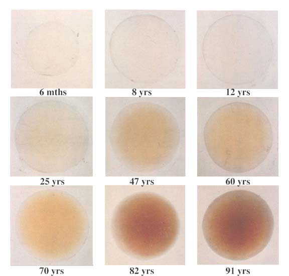
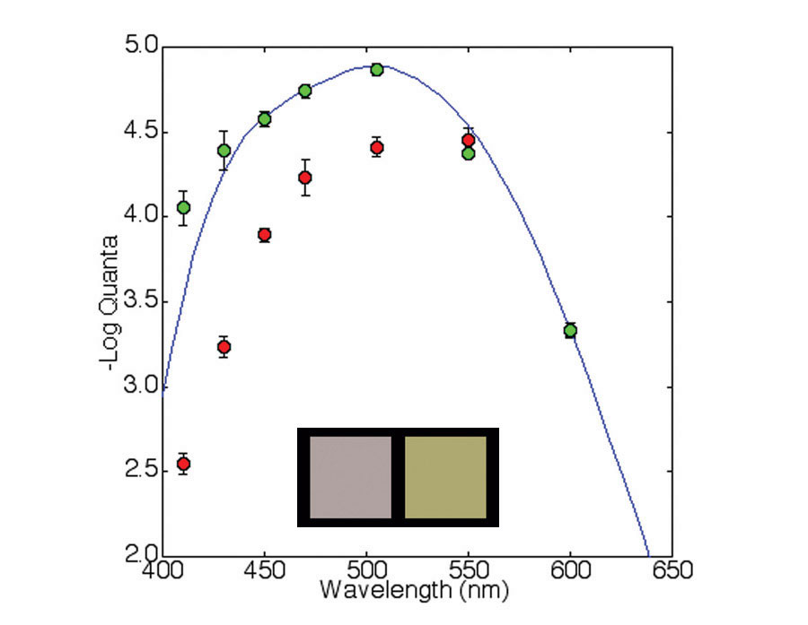
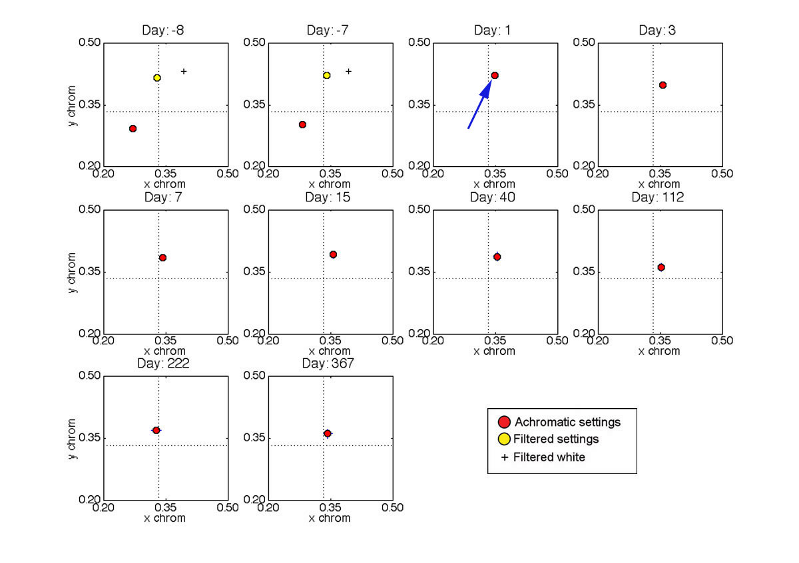
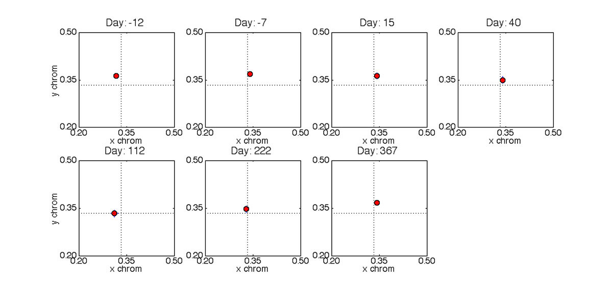
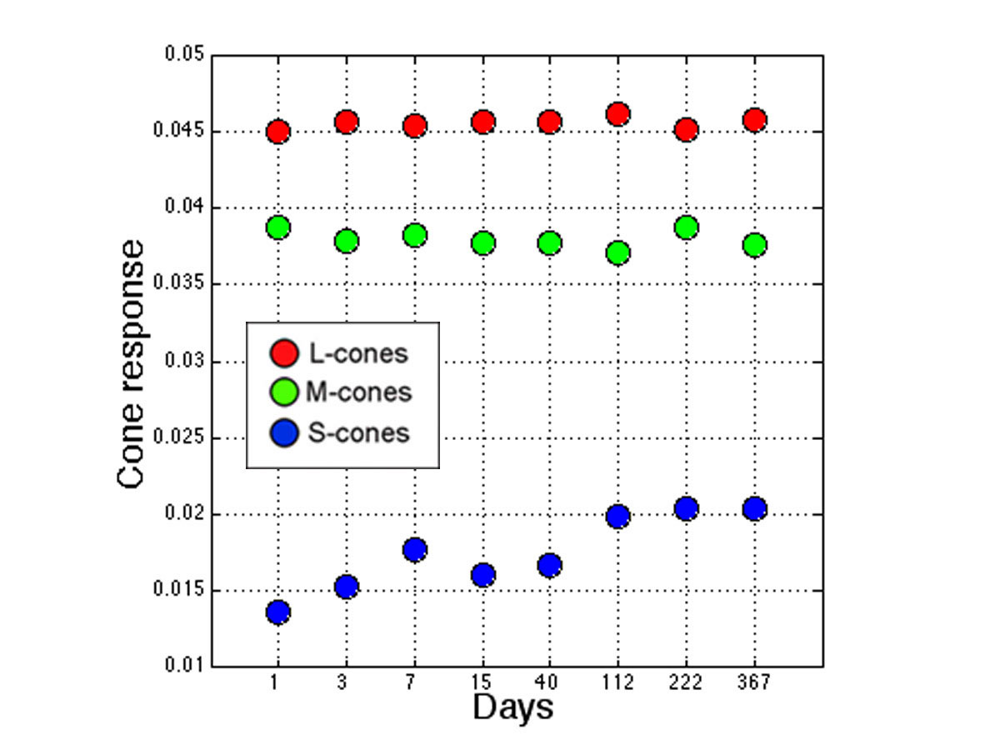

A Long-term Chromatic Adaptation Mechanism
Introduction
The color appearance of our environment generally remains relatively stable despite changes in context (e.g, due to illumination changes). This phenomenon is known as color constancy. Most research has tended to focus on short-term adaptation where recovery is fairly rapid. There is some evidence that the visual system can take a number of days to recover from medium-term adaptation. For example, the recent work by Neitz et al. (2002) reports that unique yellow settings can shift by about +/- 4 nm after subjects adapt to 'red' or 'green' light for a number of hours per day over several days, and that the visual system can take about 10 days to return to the pre-adaptive state.
Here we discuss very long-term adaptation to a change in the spectral distribution of light reaching the retina. This change results from the normal aging of the human crystalline lens, which becomes increasingly pigmented over time (see Figure 1). Despite the substantial filtering of the light, few people report any significant change in color appearance. However, after cataract surgery, patients often report large shifts in color appearance. With Mike Webster at the University of Nevada, Reno, and Peter Delahunt in our lab, we are investigating the size of this effect and the time it takes for the visual system to stabilize after surgery.

Figure 1. The human crystalline lens is shown at various ages (from Lerman, 1980).
Senescence of the human crystalline lens
The optical density of the lens progressively increases with age and causes a shift in the spectral distribution of light reaching the retina (see Figure 1). We measured the spectral absorption of cataractous lenses in vivo by comparing absolute scotopic thresholds from 410 to 600 nm before and after surgery. Settings were made by adjusting the intensity of a flickering light (3 Hz) viewed through a Maxwellian-view optical system. Subjects were dark adapted for 30 minutes and head movements were stabilized using a bite-bar. The results for one subject are shown in Figure 2. The cataract has the biggest filtering effect on shorter wavelengths and results in the 'yellowing' of the light reaching the retina (see Figure 2 inset).

Figure 2. This plot shows the sensitivity to light of various wavelengths before (red points) and after (green points) cataract surgery. The settings were normalized at 600 nm. The error bars are +/- 1 SEM. The blue curve shows the standard scotopic luminous efficiency function (CIE V'(l)). The inset panels show equal energy white (left) and the change in appearance when this white is filtered by a cataract (right).
Color appearance changes
To test color appearance changes, we asked observers to make achromatic settings before surgery and at various times after surgery. Color appearance shifts were quantified using achromatic settings made on a calibrated CRT. Chromaticity was adjusted in CIE u'v' color space with luminance fixed at 30 cd.m-2. The test area flashed on and off at 3 s intervals to reduce adaptation to the stimulus. The starting chromaticity points of the stimuli were selected randomly. Settings were made before surgery and at various intervals after surgery up to one year. The stimuli were viewed monocularly.
The settings for one observer (JD - female age 71) are shown in Figure 3. After surgery, there was a large shift in the achromatic point in the yellow direction. However, this shift is due mainly to the removal of the filtering effect of the cataract. If this effect is taken into account, the shift is relatively small (see yellow plotted points in Figure 3). The black crosses show the chromaticity of an equal energy 'white' light after being filtered by a cataract. The achromatic settings take about 3 months to stabilize after surgery. Tests on other subjects show a similar pattern of results.

Figure 3. Achromatic settings are shown in CIE xy chromaticity space made over a period of approximately one year. The days are relative to cataract surgery. The error bars are +/- 2 SEM. Equal-energy white is located at the intersection of the dashed lines.
The achromatic settings shown graphically in Figure 3 have been reproduced in color in Figure 4. Note that these colors are appoximations because their appearance will depend on the monitor and monitor settings you are using. (Note that the monitor used in the experiment was carefully calibrated to ensure colorimetric accuracy.)

Figure 4. Here is an approximation of the color settings shown graphically in Figure 3.
Where in the visual system do the changes occur?
Neitz et al (2002) found inter-ocular transfer of color appearance shifts and suggested that the changes they recorded were due to cortical processes. We did not find this to be the case in our study. Figure 5 shows achromatic settings made by subject JD with her fellow eye. (The fellow eye had a cataractous lens removed 8 months prior to the 'test' eye.) Note that there is little change in the settings over the same period as the 'test' eye. This suggests most of the long-term adaptation effects we studied here occur at a site prior to binocular combination.

Figure 5. Achromatic settings are shown in CIE xy chromaticity space for the 'fellow' eye made over the same period as the 'test' eye shown in Figure 3. The days are relative to cataract surgery in the 'test' eye. The error bars are +/- 2 SEMs. Equal-energy white is located at the intersection of the dashed lines.
The post-surgery settings for subject JD's 'test' eye were converted to cone responses using Smith-Pokorny cone fundamentals and plotted in Figure 6. Note that most of the differences in achromatic settings can be accounted for by S-cone changes.

Figure 6. The achromatic settings for the 'test' eye are shown here in cone coordinates.
Conclusions
After cataract surgery, S-cone stimulation increases dramatically and generally results in a large change in color appearance. Our research suggests that it takes about 3 months for the visual system to restabilize. It appears that most of the long term adaptation effects we studied here occur in a site prior to binocular combination. The duration over which renormalization takes place exceeds other types of chromatic adaptation.